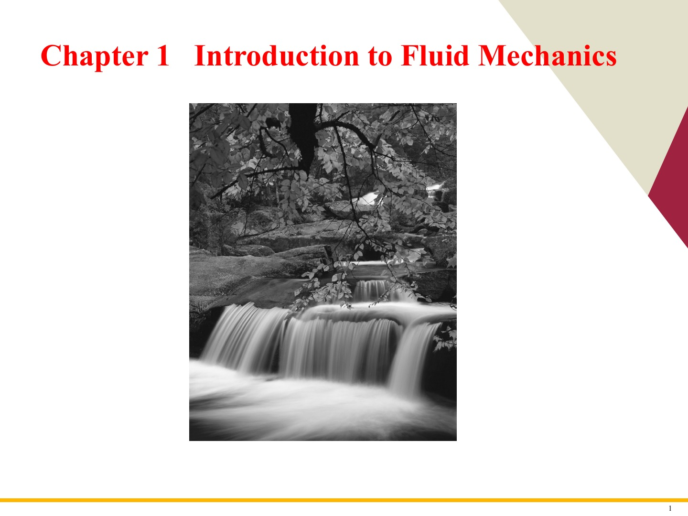
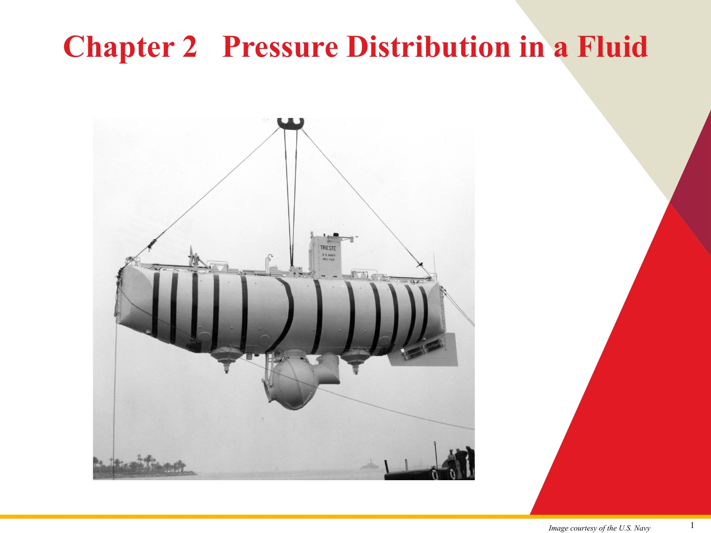

작성 완료
Week 01 · 날짜 미기재
Lecture 1. Introduction to Fluid Mechanics
fluid(유체)와 continuum(연속체)의 정의, system(시스템)·control volume(검사체적), viscosity(점성), 유동 기술법과 기본 해석 방법을 설명합니다.

Course archive · study edition
원본 강의 슬라이드와 영어 자동생성 스크립트를 대조하고, 핵심 개념 요약·슬라이드별 해설·시험 영어를 한 흐름으로 구성한 수업 대체용 학습 노트입니다.
Available lectures
각 노트는 원본 PDF의 슬라이드 순서를 그대로 따르며, 필수 설명은 클릭 없이 아래로 스크롤하면서 읽을 수 있습니다.
Week 01 · 날짜 미기재
fluid(유체)와 continuum(연속체)의 정의, system(시스템)·control volume(검사체적), viscosity(점성), 유동 기술법과 기본 해석 방법을 설명합니다.

Week 02 · 날짜 미기재
hydrostatic pressure(정수압), manometer(액주계), 압력중심과 수문 반력, buoyancy(부력), 부유체 안정성과 강체 운동의 압력분포를 설명합니다.

Authoring system
원본 슬라이드를 빠짐없이 보존하고 스크립트의 전문용어를 슬라이드와 대조합니다.
번역을 넘어 개념 간 관계, 가정의 의미, 이후 문제풀이에서의 역할까지 설명합니다.
영어 정의 문장, 문제 지시 표현, 비교 기준과 모범답안을 함께 제공합니다.